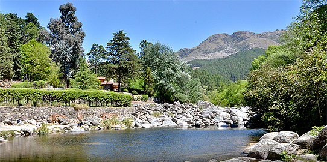

LAS JIS, EN RELACION AL VALLE DE CALAMUCHITA

Las Jornadas Interdisciplinarias de Integración de Saberes (JIS) son espacios clave para el intercambio de conocimientos entre diversas disciplinas, enfocados en abordar problemas ambientales en Calamuchita. Reuniendo a académicos, organizaciones y la comunidad, estas jornadas facilitan la colaboración en la búsqueda de soluciones a desafíos como la gestión del agua, la conservación de la biodiversidad y la contaminación. Al integrar diferentes perspectivas, enriquecen el diálogo, fomentan la concientización y empoderan a la población local, además de presentar buenas prácticas que pueden inspirar nuevas iniciativas, contribuyendo así a un desarrollo más sostenible en la región.
Calamuchita enfrenta varios problemas ambientales, entre los que destacan la contaminación del agua por desechos industriales y agrícolas, la deforestación y la erosión del suelo debido a la expansión urbana y prácticas no sostenibles. La gestión inadecuada de residuos sólidos también contribuye a la contaminación, mientras que el cambio climático provoca fenómenos extremos que afectan la agricultura. Además, la pérdida de biodiversidad y el desarrollo turístico insostenible generan presión sobre los recursos naturales. Abordar estos desafíos requiere la colaboración de la comunidad y las autoridades para implementar prácticas sostenibles y conservar el entorno.
En este sitio, te ayudaremos a como poder informarte, prevenir y ayudar a esta situacion tan delicada que afronta nuestro querido valle.
Paginas para preveer y conocer la situacion ambiental de calamuchita